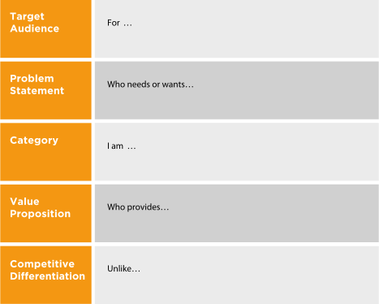
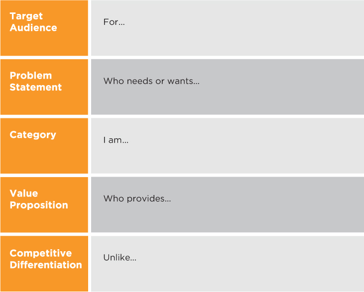

The triangulation exercise has prepared you for writing your positioning statement, the first step in the BrandingPays System. This statement is a tool to help you to ensure that you have a unique and compelling value proposition for a particular target audience.
Remember that we “bake the cake, then ice it.” The cake is your positioning. This is the foundation for a strong brand. Without it, your brand would be all fluff, or icing—not very substantial or credible.
It will also provide input to the Brand Strategy Platform (chapter 4), where we put your cake and icing together.
Despite popular belief, your positioning statement is not your elevator pitch. Elements of your positioning statement, however, will be used in your elevator pitch and key messages, which we’ll explore in chapter 3.
See Figure 2.3 for our positioning statement template. There are five positioning elements that we need to consider:
•Target Audience
•Problem Statement
•Category
•Value Proposition
•Competitive Differentiation
Figure 2.3
Positioning Statement
 
To access PDF version, go to www.brandingpays.com/resources
Geoffrey Moore, the author of Crossing the Chasm and a fellow Regis McKenna partner, did the business world a great service when he developed the positioning statement format that is basically a run-on sentence that goes:
For (target audience)
Who needs or wants (problem statement)
Our product is a (category)
That (value proposition)
Unlike (key competitor), our product is … (competitive differentiation)
The beauty of this format is that it is a great way to ensure you understand your audience’s needs and message your value in a compelling way.
When applied to personal branding, you are the “product” in the positioning statement.